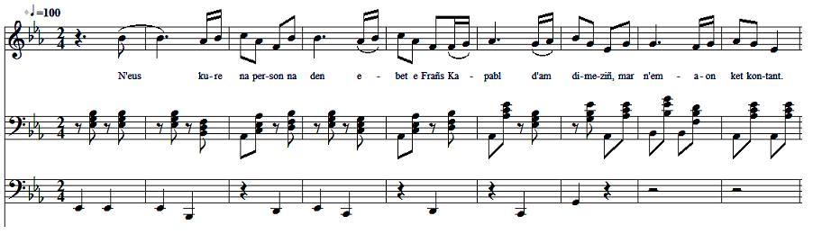

Deschet kuré na person
La femme aux deux maris
A wife with two husbands
Texte recueilli par l'Abbé François Cadic
Publié dans "La Paroisse Bretonne" en mars 1926
Mélodie
"Deschet kuré na person"
Source: "La Paroisse Bretonne", mars 1926
Arrangement Christian Souchon (c) 2016
|
BREZHONEG (Stumm KLT) N'EUS KURE NA PERSON 1. - N'eus kure na person na den ebet e Frañs Kapabl d'am dimeziñ, mar n'emaon ket kontant 2. Ha setu me dimeet, hag euredet ivez. Erru ganin ul lizher da vonet d'an arme. 3. Erru ganin ul lizher da vonet d'an arme. Ha Janedig, ar plac'h vrao, jomo er ger adarre. - 4. Setu echu ar seizh vloaz, an eizhvet komañset. An Dragon hag an arme e ker ne erru ket. 5. An Dragon hag an arme e ker ne erru ket. Janedig 'n-em gave yaouank: hi aet ha dimeet. 6. Janedig 'n-em gave yaouank: hi aet ha dimeet. Med noz ketañ he eured, eñ aet hag erruet. 7. - Ter Doue da va sikourit, ter Doue d'am c'honfortit Neizheur e oan intañvez, henozh 'm-eus daou bried. 8. Neizheur e oan intañvez, henozh 'm-eus daou bried. Gant pehini anezhe dav eo din mont da gousket? 9. Gant an Dragonig yaouank-mañ ema red din monet Gant hennezh edon bet c'hoazh, gant henhont n'edon bet. 10. - Sailh-ta bremañ, denig yaouank, sailh-ta war ar pave! Ni c'hoario ar gleze, buhez evit buhez! 11. Ni c'hoario ar gleze, buhez evit buhez! An hini a c'hounio, Janed 'n-devo ivez. 12. -Kenavo-ta, Janedik, kenavo, kaezh Janed! Pa'z eo red din ho kuitaat noe kentañ va eured! - Transcrit par Christian Souchon |
FRANCAIS NI VICAIRE NI RECTEUR 1. « Il n'y a ni vicaire, ni recteur, ni personne en France Capable de me marier, si je ne suis pas content. 2. Et me voilà fiancé et marié aussi, Une lettre m'arrive de partir à l'armée. 3. Une lettre m'arrive de partir à l'armée Et Jeannette, la belle fille, restera encore à la maison. » 4. Voici finies les sept années, commencée la huitième, Le Dragon de l'armée ne revient pas au village. 5. Le Dragon de l'armée ne revient pas au village. Jeannette se trouvait jeune, voilà qu'elle se marie. 6. Jeannette se trouvait jeune, voilà qu'elle se marie Mais la première nuit de noces, le voilà qui arrive. 7. « Mon Dieu, à mon secours, mon Dieu inspirez-moi, Hier soir, j'étais veuve, ce soir j'ai deux époux. 8. Hier soir, j'étais veuve, ce soir j'ai deux époux. Avec lequel des deux faut-il que j'aille coucher? 9. Avec ce jeune dragon-ci mon devoir est d'aller Avec lui j'ai été encore, avec celui-ci ne suis pas allée.» 10. « Debout maintenant, jeune homme, viens sur le pavé Nous jouerons du sabre, et ta vie pour la mienne. 11. Nous jouerons du sabre, et ta vie pour la mienne Celui qui gagnera, celui-là aura Jeannette. 12. Adieu donc, Jeannette, chère Jeannette, adieu, Puisqu'il faut te quitter, la première nuit de mes noces. Traduction: Abbé François Cadic |
ENGLISH NEITHER CURATE NOR PARSON 1. Neither curate, nor person or anybody in France Could get me to marry someone who did not please me. 2. And now that I am betrothed and married, A letter summons me to leave to the army. 3. A letter summons me to leave to the army, While Jenny, the fair girl, will stay at home. 4. Now the seven years are over and the eighth is beginning Without the Dragoon coming back home. 5. Without the Dragoon coming back home. Since Jenny felt still young, she married again. 6. Since Jenny felt still young, she married again. But on the very night of the wedding, the Dragoon returned. 7. - My God, help me! My God, inspire me! A widow was I yesternight; now I have two husbands. 8. A widow was I yesternight; now I have two husbands. With which am I going to sleep? 9. With the young dragoon here; that's what I owe With him I did once. With the other I never did. - 10. - Now, come on, young man, let us fight in the street. A life and death sabre duel. 11. A life and death sabre duel; The winner will have Jenny. 12. - Farewell, Jenny! Dear Jenny, farewell! I must leave you on the very night of my wedding. Translation: Christian Souchon (c) 2016 |
NOTES:
|
Recueilli à Noyal-Pontivy par M. L'abbé Le Bellour. "Le cas est certes une rareté. Il s'est rencontré cependant, dit-on assez fréquemment à une époque assez rapprochée de nous, au sortir de la Grande Guerre, qui bouleversa tant de foyers. Pourquoi ne se serait-il pas vu, alors que le service militaire séparait les conjoints pendant sept ans et davantage, et que la navigation à voiles ne ramenait chez eux les pauvres matelots partis pour les Terres-Neuves qu'après des absences sans fin? Que voulez-vous? Il y avait des jeunes femmes, alors comme aujourd'hui, chez lesquelles la patience n'était pas la principale des vertus Elles ne calculaient pas avec les obstacles ni les difficultés du chemin. Dès lors qu'il n'était pas à l'heure, c'est qu'il avait cessé de vivre, et elles se croyaient libres [...] [Toutefois, écoutant sa conscience], l'héroïne de cette chanson resta avec son jeune dragon et donna congé à son remplaçant " (Commentaire de l'Abbé Cadic) |
Collected at Noyal-Pontivy by the Rev. Le Bellour. "The present issue occurred seldom. However, it did allegedly, not so long ago, at the end of the first world war that did upset so many households. How could it have been otherwise, since the national service would set apart married people for seven years onward, and overseas sailing brought back home unfortunate Newfoundland sailors only after an endless absence? That's a fact! There were back then and there still are today girls whose forte was not patience. They did not reckon with obstacles and difficulties to be encountered on the way. If he was not back in time, then because he had ceased to live and they considered themselves free from any commitment [...] [But, listening to the voice of her conscience], the girl in the present song stayed with her young dragoon and dismissed his successor " (Comment by Rev. Cadic) |
Retour à "Ceinture de soie"
Table